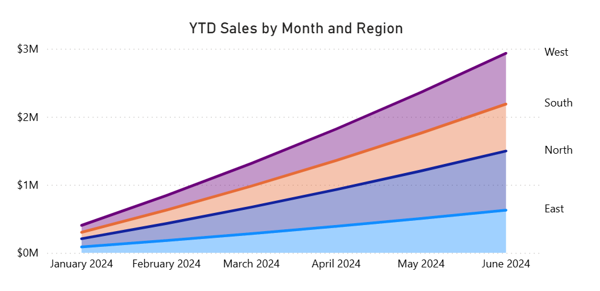

YTD Sales by Region
Description
YTD (Year-to-Date) Sales by Region tracks cumulative sales from the beginning of the year to the current date, segmented by geographic region. This KPI helps organizations monitor sales momentum and regional performance in real time.
Visual Example

DAX Formula
Usage Notes
- Use with a properly marked Date table for correct time intelligence behavior.
- Pair with regional slicers or legend groupings to compare performance across areas.
- Use conditional formatting to highlight top- and bottom-performing regions.
- Make sure to account for partial months when interpreting current-period trends.